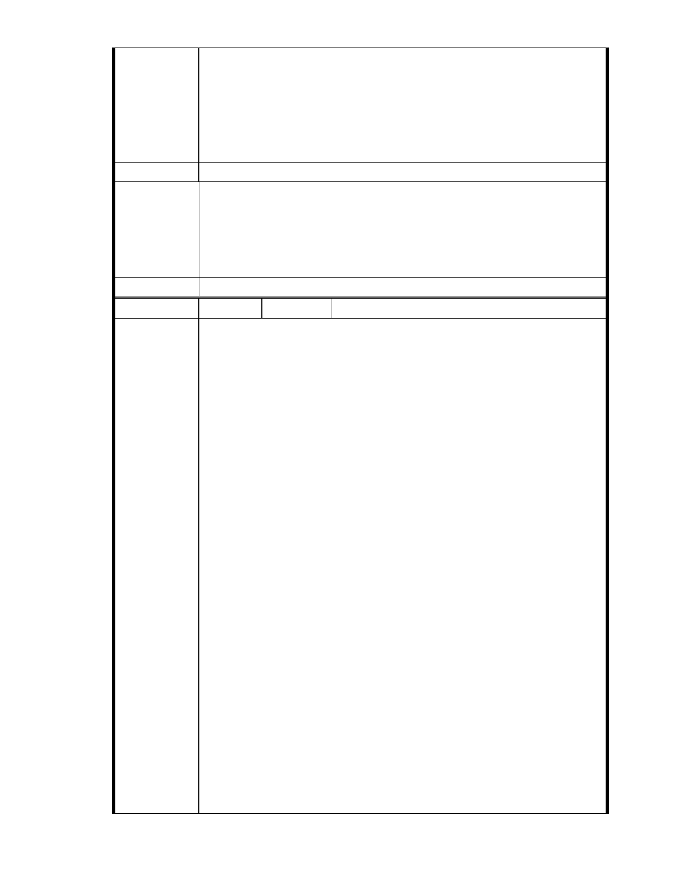

山溝與湖泊交會處，水土保持功能重要，開發後將影響上游水系排水。
經查本案所在地區仍然位於山溝與湖泊交會處，地質條件、山坡谷地集
水敏感地區…與排水功能等條件依然不變，加上地球暖化、氣候異常、
天災不斷…懇請 貴委員會應逐條審理先前駁回理由，若有駁回理由未喪
失或未改善者，即應以相同理由駁回本案變更申請。
建議辦法
一、本案申請範圍於慈濟購得前已遭非法填土，已長年不具保護區之都
市排水、滯洪溼地功能；目前申請方案較先前方案已大幅降低開發
市府說明
強度、調整使用項目並承諾大面積滯洪設施等回饋事項，顯示申請
單位欲改善地區環境、促進多贏發展之誠意。
二、相關陳情意見將納入本案審查人民意見，依法定程序辦理。
委 員 會 決 議 同編號 1。
編
號 121
陳情人 陳乃立（ MA201210190122 ）
主旨：
有關「變更臺北市內湖區成功路五段大湖公園北側部分保護區及道路用
地為社會福利特定專用區主要計畫案」依據「開發行為應實施環境影響
評估細目及範圍認定標準」第 31 條第 1 項第 12 款及第 1 款第 6 目規定，
社會福利設施位於山坡地，申請開發或累積開發面積一公頃以上，應實
施環境影響評估。
說明
依據都市計畫法第 19 條第 1 項規定辦理。
陳情理由
本案主管機關為台北市政府社會局，依本案「興辦事業計畫書」業已奉
內政部 86 年 7 月 24 日台（86）內社字第 8684674 號函原則同意在案，主
管機關為台北市政府社會局而非教育局，本案屬社會福利設施，不屬文
教建設之開發，應不適用「開發行為應實施環境影響評估細目及範圍認
定標準」第 23 條相關規定。
本案變更山坡地保護區作為社會福利設施特定專用區，允許作為安養中
心、護理機構或長期照護機構、養護機構、安養機構等老人福利機構使
用，應依「開發行為應實施環境影響評估細目及範圍認定標準」第 31 條
第 1 項第 12 款規定：「安養中心、護理機構或長期照護機構、養護機構、
安養機構等老人福利機構，其興建或擴建工程符合第一款第一目至第九
目規定之一 」規定辦理。
另依據「開發行為應實施環境影響評估細目及範圍認定標準」第 31 條第
1 項第 1 款第 6 目：「位於山坡地、國家風景區或台灣沿海地區自然環境
保護計畫核定公告之一般保護區，申請開發或累積開發面積一公頃以
- 133 -